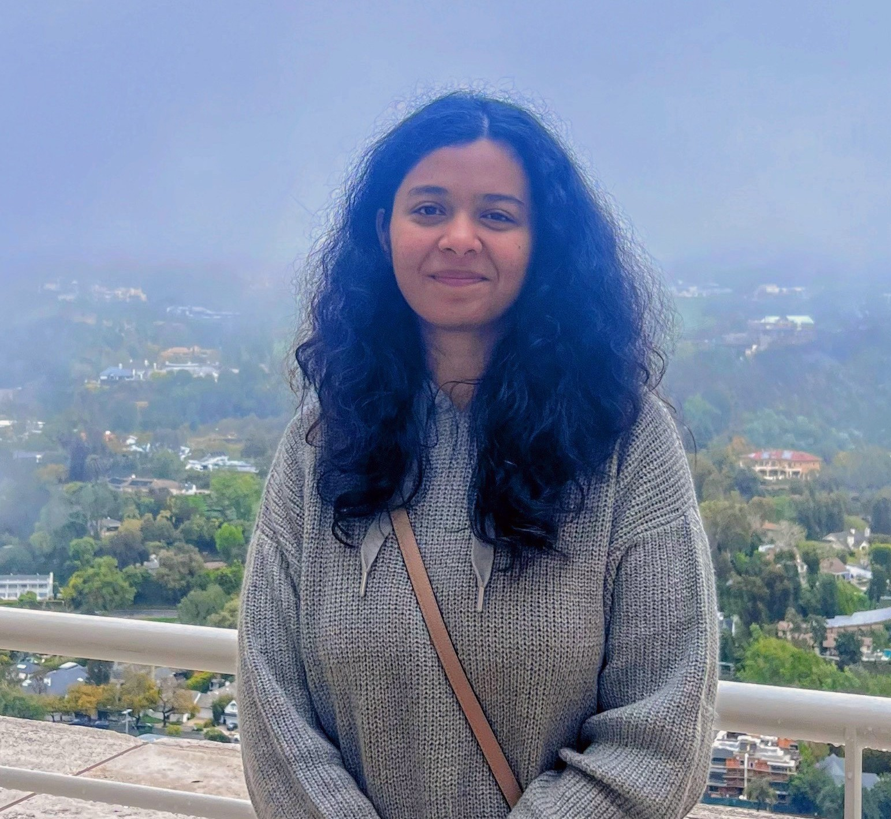
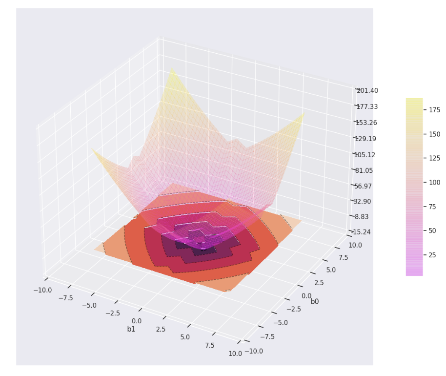
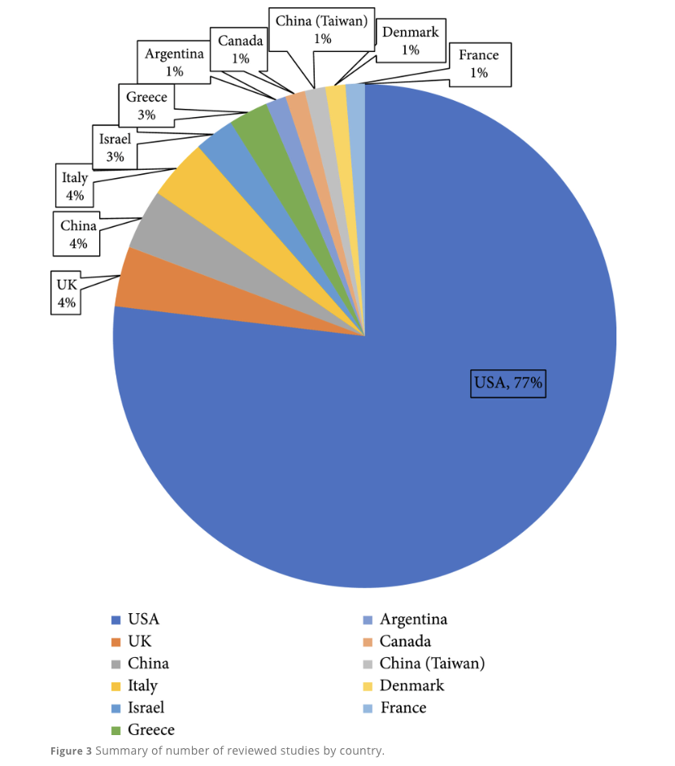
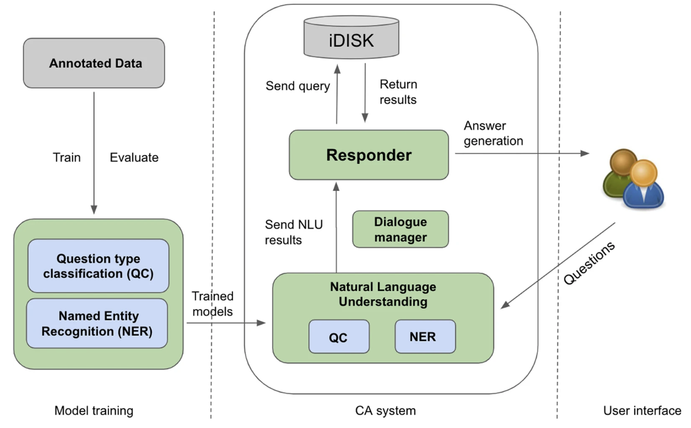
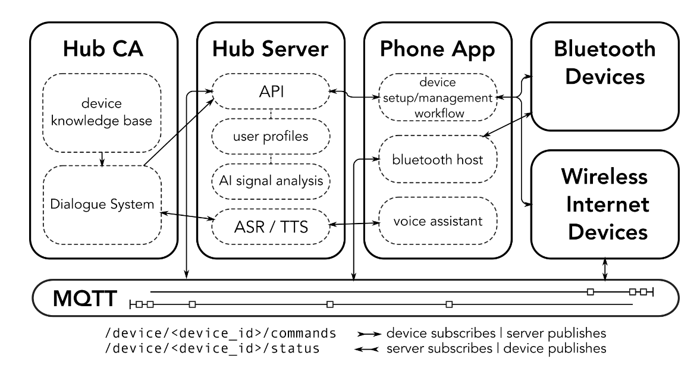
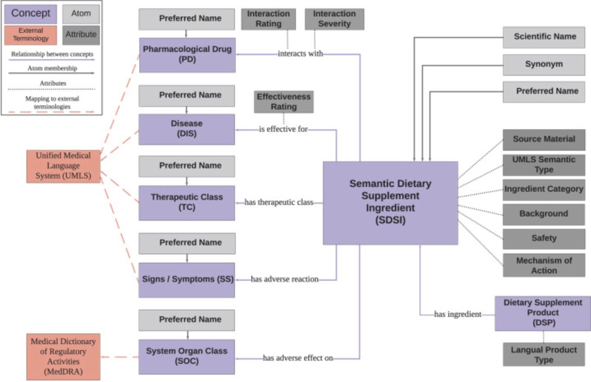

|
Esha Singh I am a second-year Ph.D student in Computer Science at University of California, Santa Barbara (shifting to UC, San Diego this Fall!). I am fortunately advised by Prof. Yu-Xiang Wang. I did my Masters at University of Minnesota, Twin Cities, where I was advised by Prof. Ju Sun as part of GLOVEX lab. I also worked as Research Assistant with Prof. Rui Zhang from 2019-2021. Before joining Ph.D, I also worked as a Machine Learning Engineer at Armorblox (Cisco). |
 |
{kind=link}
News
|
ResearchI'm interested in machine learning, deep learning optimization and their applications. Recently, I am working towards quantization of neural networks and non-convex optimization problems. I have also taken up few projects in the space of Differenital privacy. |
|  |
MoXCo: How I learned to stop exploring and love my local minima?
Esha Singh, Shoham Sabach, Yu-Xiang Wang, NeurIPS 2023, M3L Workshop Paper / Poster Adaptive optimizers that not only expedite exploration with faster convergence speeds but also ensure the avoidance of over-exploitation in specific parameter regimes, ultimately leading to convergence to good solutions. |
|  |
Social Determinants of Health In the Era of Artificial Intelligence with Electronic Health Records: A Systematic Review
Anusha Bompelli, Yanshan Wang, Ruyuan Wan, Esha Singh, Yuqi Zhou, Lin Xu, David Oniani, Bhavani Singh, Joycs (JOY) E. Balls-Berry, Rui Zhang, SPJ, AAAS, 2021 paper / arXiv A scoping review of the SBDH factors, the relationship between SBDH and diseases, the NLP techniques used to extract SBDH information from clinical notes, and predictive models using SBDH factors to predict health outcomes. |
|

|
A conversational agent system for dietary supplements use
Esha Singh, Anusha Bompelli, Ruyuan Wan, Jiang Bian, Sergei Pakhomov, Rui Zhang Springer Nature, BMC, 2022 Springer Journal version / arXiv Develops the first Conversational Agent system for Dietary Supplement use using the MindMeld framework and iDISK domain knowledge base.
|
|  |
Everyday Living Artificial Intelligence Hub
Raymond Finzel, Esha Singh, Martin Michalowski, Maria Gini, Serguei Pakhomov NAACL, 2021 DaSH-LA 2021, Proceedings UMN coverage Everyday Living Artificial Intelligence (AI) Hub, a novel proof-of-concept framework for enhancing human health and wellbeing via a combination of tailored wearable and Conversational Agent (CA) solutions for non-invasive monitoring of physiological signals, assessment of behaviors through unobtrusive wearable devices, and the provision of personalized interventions to reduce stress and anxiety |
|  |
Prototype Conversational Agent for Dietary Supplements
Esha Singh, Anusha Bompelli, Andrew Yang, Andrew Wang, Serguei Pakhomov, Rui Zhang IEEE ICHI 2020 (Oral Presentation) IEEE ICHI Proceedings 2020 A prototype conversational agent(CA) system catered to resolve user queries regarding dietary supplements. |
Projects |
 |
Differenitally Private Survival Hazard Models (Ongoing research): Make survival hazard models differential private with robust privacy guarantees.
Fairness in Machine Learning (Fall 2020): Comprehensive analysis of fairness and bias principles in Machine Learning with a focus on methods to make supervised classification algorithms fairer. Thoracic diseases detection via Transfer learning (Feb-May.'20): Implemented Transfer Learning for Computer Vision, to beat state-of-art baseline on MIMIC-CXR dataset for the DenseNet-121 model. ML in Vision-aided Robotics (Spring 2020): Developed object detection & segmentation algorithm to identify diver & diver’s hand gestures for Autonomous Underwater Vehicles (AUVs), in occluded environment. |
Teaching |
|
Graduate Student Instructor, CS165B Fall 2023
Graduate Student Instructor, CS165A Spring 2023 Graduate Student Instructor, CS181 Fall 2022 |
|
Source code from Jon Barron's website. |